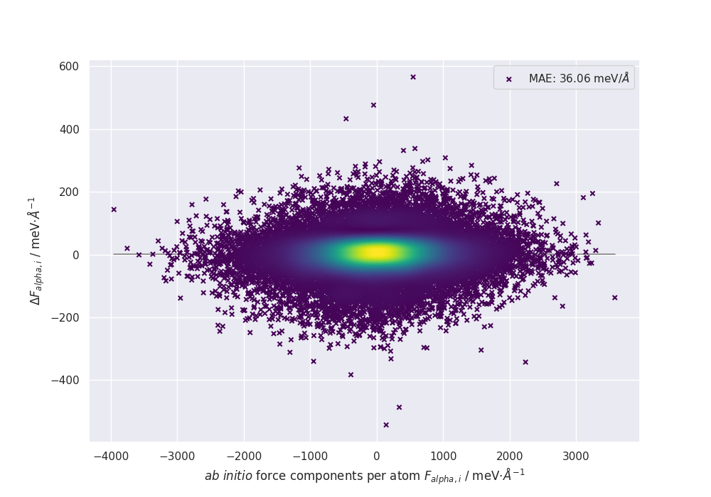
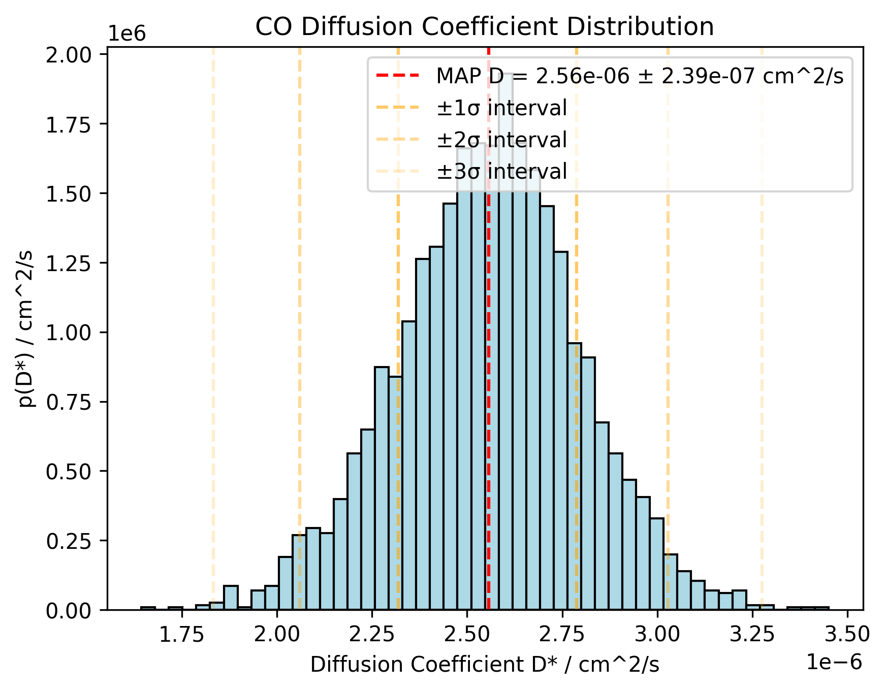
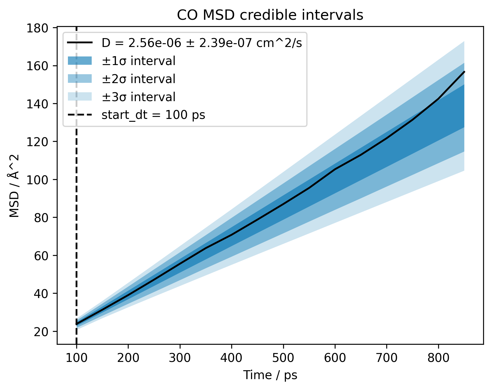
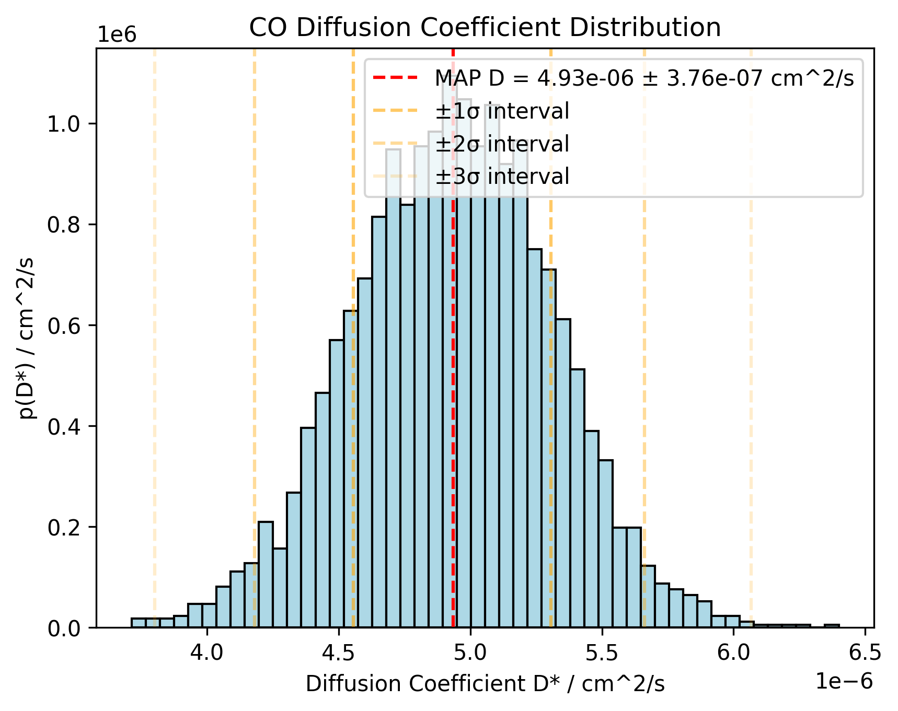
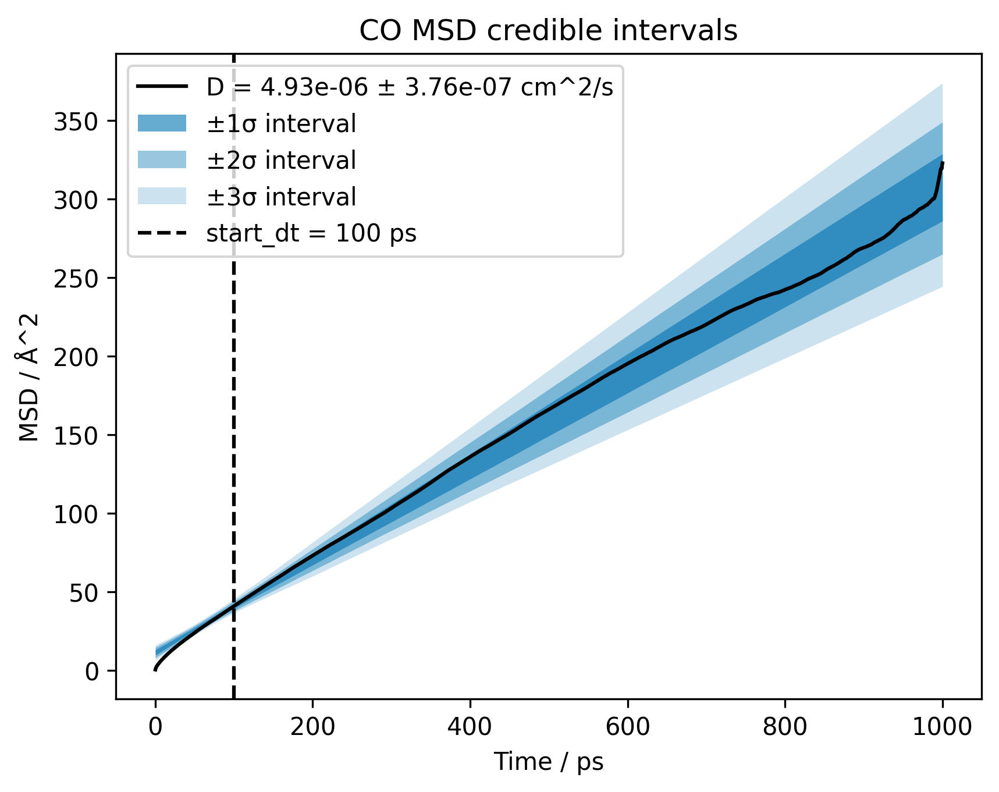
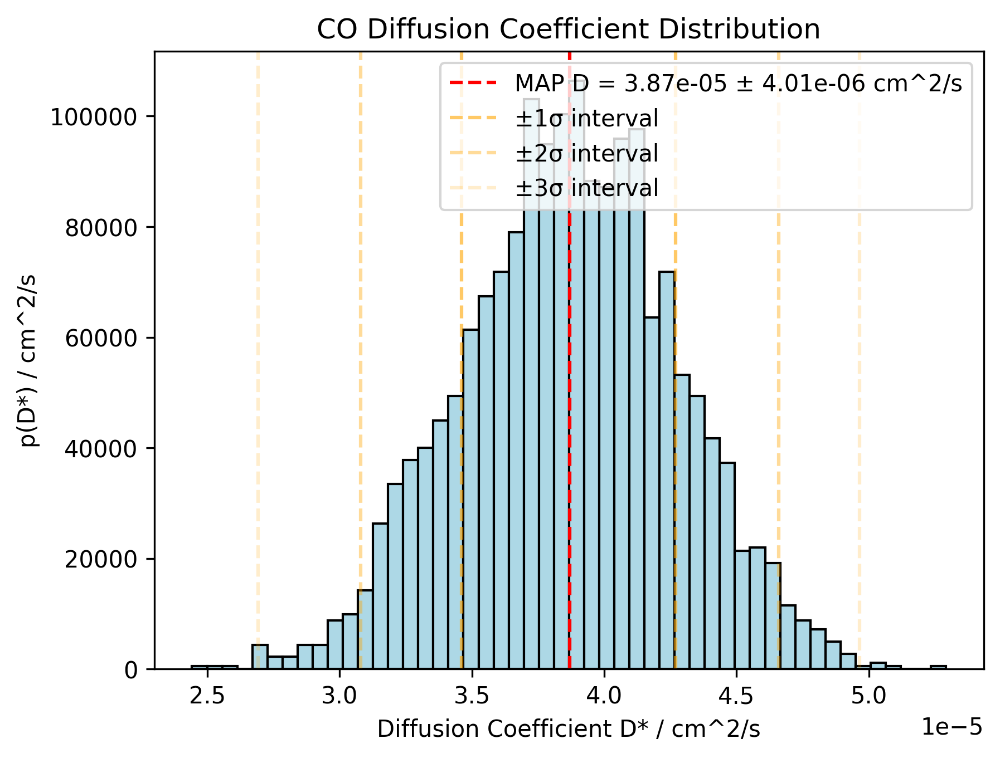
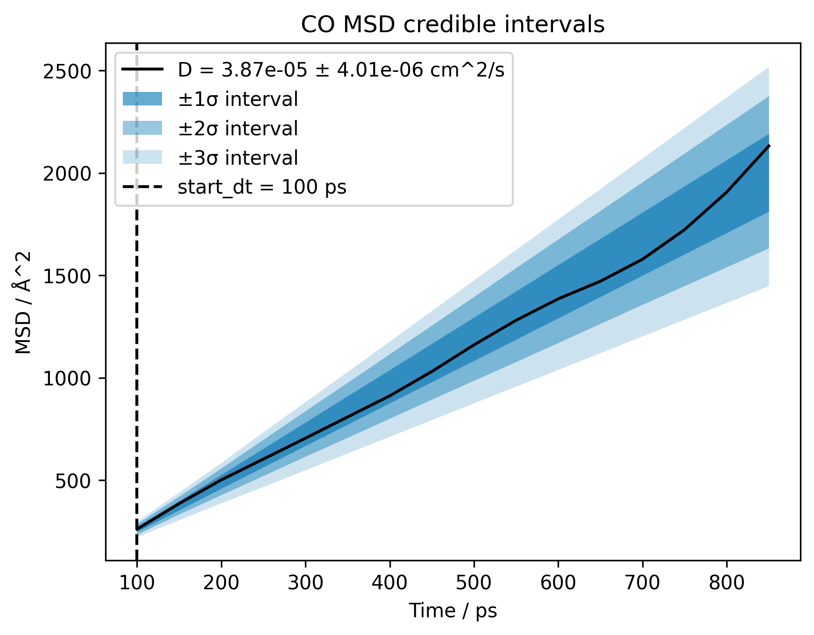

We generate initial 32-molecule boxes using Packmol and SMILES strings ("CO").
> "C" → CH4, "Clc(c(Cl)c(Cl)c1C(=O)O)c(Cl)c1Cl" → C7HCl5O2
Foundation Models
MACE is pre-trained on diverse datasets. We use it to sample 1ns of MD cheaply to explore phase space before relabeling.
Why Train a Custom MLIP?
While MACE is general, a tailored model ensures better accuracy for methanol's specific dynamics, like self-diffusion and hydrogen bonding.
Simulations are conducted at 300K, ensuring density matches experimental liquid methanol values.
Functional Selection & D3
Exchange-Correlation Functional
We use PBE, a common GGA functional. It is a robust balance between accuracy and computational efficiency.
Dispersion (D3)
Standard DFT fails at long-range van der Waals forces. We add Grimme D3 to correctly capture intermolecular attraction.
- GGA: Works well for molecules because it accounts for electron density gradients
- LDA: Only accounts for electron density, which is less accurate for molecules but fine for metals
- Evaluating D3 outside CP2K (via TorchDFTD3) allows for faster evaluation and easier decomposition of dispersion contributions.
DFT Convergence: MGRID
The MGRID parameter in CP2K controls the real-space grid cutoff for Hartree and XC potentials.
- Goal: Find the balance between accuracy and computational cost.
- Threshold: Variation in forces and energies must be < 0.002 units.
- Result: Optimal cutoff prevents "grid noise" from polluting the MLIP training data.
- Conclusion: A cutoff of \(500 \text{ Ry}\) provides a good balance.
Training Hyperparameters
We explore the impact of Gaussian Moment Neural Network settings on the apax model:

Force predictions from the final D3 corrected model compared to ab-initio forces (PBE)
- Radial Cutoff (rmax): Higher values capture longer-range physics but increase cost.
- Architecture: Different nodes per layer affect the model's capacity and complexity.
- Number of Epochs: More epochs can improve accuracy but also increase training time.
- Number of Basis Functions: More basis functions can improve accuracy but also increase computational cost.
MAE: Force vs Energy
Baseline Model Parameters:
- Architecture: 2 layers with 32 nodes each
- Radial Cutoff (rmax): 5.5 Å
- Number of Epochs: 5000
- Number of Basis Functions: 24
Training: Different Architectures
Training: Different Cutoffs
Training: Number of Basis Functions
MAE: Force vs Energy (Closeup)
Production MD Setup
- Relaxation: Before MD, we use
ASEGeoOpt to minimize forces to prevent unphysical behavior.
- Timestep: The timestep has to resolve high-frequency O-H vibrations while maintaining stability, which is given for 0.5 femtoseconds.
- Scaling: Box size increased to 64 molecules for better statistics.
Observation
Model ensembles are used here to detect if the simulation enters "unseen" configurations where uncertainty spikes.
Also, we can determine an uncertainty quantification by looking at the spread of predictions across the ensemble, which share a common backbone but differ in their initialization of the final layer. Also a force threshold of 2 eV/Å is set to detect unphysical configurations. We don't use an energy threshold because the energy of the system is systemsize dependent.
Structure & Dynamics: D3 Model
Histogram

Diffusion coefficient of \(D \approx 2.5 \times 10^{-10} \, \text{m}^2/\text{s}\)
Bayesian Fit

Calculated from center-of-mass motion, first 100 nanoseconds cut off
Structure & Dynamics: DFT Model
Histogram

Diffusion coefficient of \(D \approx 5.2 \times 10^{-10} \, \text{m}^2/\text{s}\)
Bayesian Fit

Calculated from center-of-mass motion, first 100 nanoseconds cut off
Structure & Dynamics: MACE Model
Histogram

Diffusion coefficient of \(D \approx 3.9 \times 10^{-9} \, \text{m}^2/\text{s}\)
Bayesian Fit

Calculated from center-of-mass motion, first 100 nanoseconds cut off
RDF: Summary
- O-H hydrogen bond:
\(r_{1} \approx 1.02 \, Å\)
- O-H nearest neighbor:
\(r_{2} \approx 2.12 \, Å\)
- Experimental values:
\(r_{1} \approx 0.96 \, Å\)
\(r_{2} \approx 2.08 \, Å\)
Every model overestimates covalent bond lengths and nearest neighbor distances.
RDF: Summary
- O-O nearest neighbor:
\(r_{1} \approx 2.6 \, Å\)
- DFT:
\(C_N \approx 2.26 \) at \(r = 3.33 \, Å\)
- D3:
\(C_N \approx 2.31 \) at \(r = 3.33 \, Å\)
- MACE:
\(C_N \approx 2.04 \) at \(r = 3.48 \, Å\)
- Experimental values:
\(C_N\) between \(1.8\) and \(2.2 \, Å\)
- Experimental values:
\(r_{1} \approx 2.7 \, Å\), \(r_{2} \approx 4.5 \, Å\)
DFT model, especially with D3 corrections, overstructures the system.
Summary
- Workflow: Unified management ensures every simulation step is linked and reproducible.
- Labeling: MGRID convergence and GGA+D3 provide a high-quality physical baseline.
- Training: Hyperparameter tuning and ensembles minimize error and provide uncertainty.
- Production: The final MLIP successfully runs stable simulations but fails to reproduce methanol's structural (RDF) and dynamic (Diffusion) properties at ab initio levels.
Improvements:
- Neural Network: Improved model selection and hyperparameter optimization
- Dispersion Corrections: Improved parameter setting
- Training Dataset: Expanded with more diverse configurations
- Classical Force Fields: Comparison as sampling MD simulations against MACE